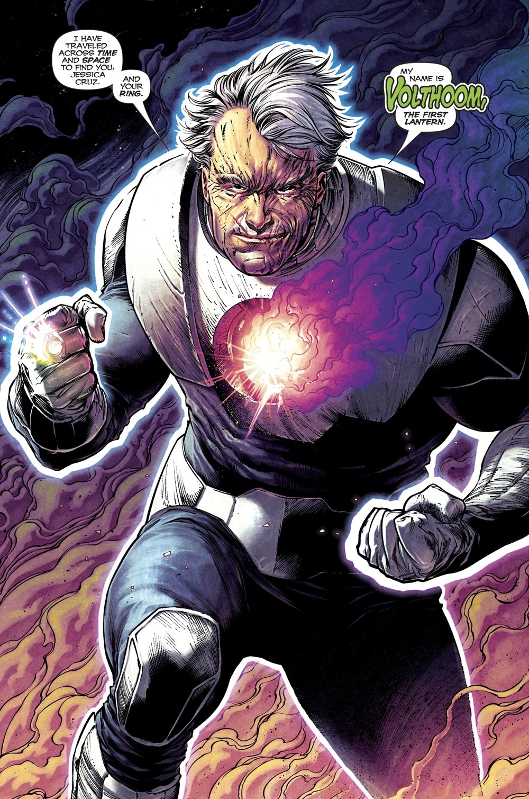
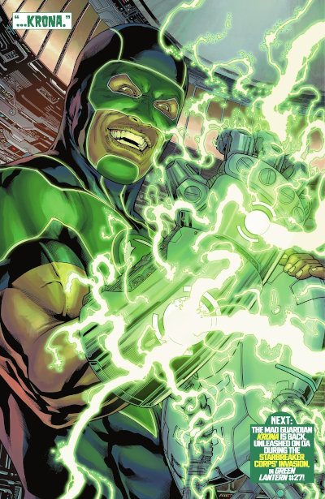
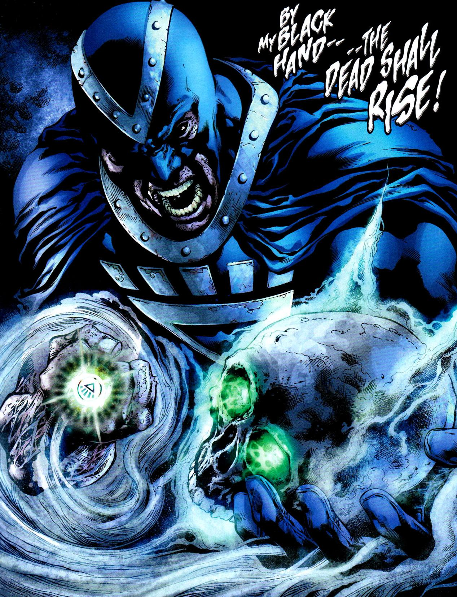
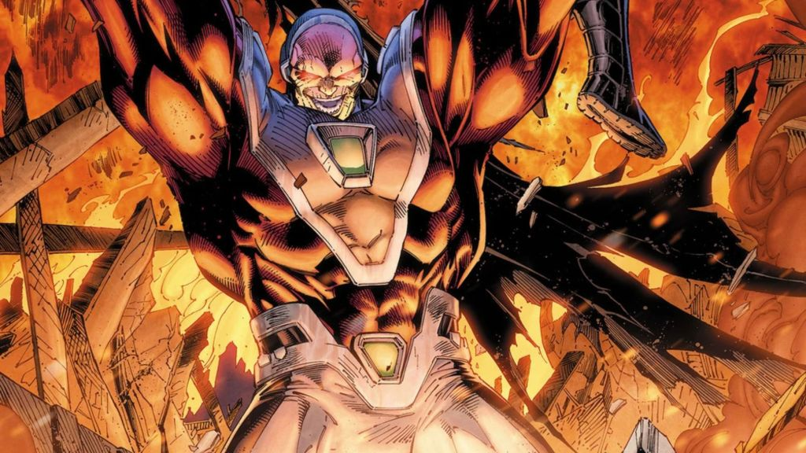
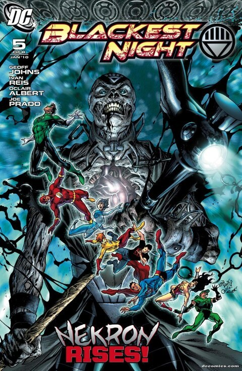
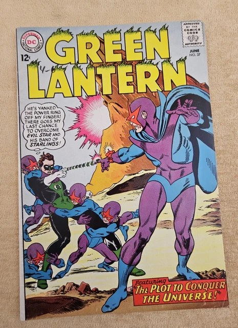

Villains
Every light casts a shadow. These are the beings who nearly snuffed the Lanterns out — destroyers of universes, the first ring-bearer gone mad, and the Guardian who broke reality itself.

The Anti-Monitor
The destroyer of universes — the Crisis made flesh.

Volthoom, the First Lantern
The first being to wield a power ring — and the reason the Guardians fear their own history.

Krona
The renegade Guardian whose curiosity shattered the universe into a multiverse.

Black Hand
William Hand — the first Black Lantern, death's herald.

Mongul
The warlord of Warworld — tyrant, Sinestro Corps enforcer, and Bzzd's killer.

Nekron
The Lord of the Unliving — death itself, and the architect of the Blackest Night.

Evil Star
The immortal tyrant of the Starband — who murdered his own world of 2.5 billion.
Artwork credits (7 images)
Credits refer to the illustrations shown here. Open a record for sources, adaptations and unresolved details. Some artwork and source pages contain story spoilers.
- Anti Monitor — Artist credit unconfirmed.
- Volthoom — Artist credit unconfirmed.
- Krona — Artist credit unconfirmed.
- Black Hand — Blackest Night #0 (2009), closing story page, first panel. Ivan Reis (interior pencils).
- Mongul — Artist credit unconfirmed.
- Nekron — Blackest Night #5 (2009), main cover. Alex Sinclair (cover artist (publisher credit)); Ivan Reis (cover artist (publisher credit)); Oclair Albert (cover artist (publisher credit)).
- Evil Star — Green Lantern (1960) #37 (1965), photograph of the printed cover. Gil Kane (cover artist (publisher credit)); Murphy Anderson (cover artist (publisher credit)).